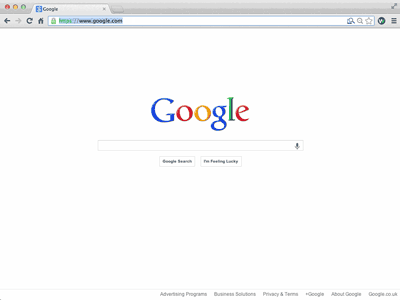

Struggling to focus?
Workify blocks pages, making you wait 30 seconds to see the sites you waste time on.
Looking for something better to do?
Sometimes you need a break. But could you make better use of break time? Workify shows you a list of productive things to do, as chosen by you.
How much energy do you have?
Sometimes you just need a quick reminder of what you need to do. But sometimes you're too tired for the big things. Workify splits your tasks into low and high energy, so you know what you should be doing no matter how you feel.